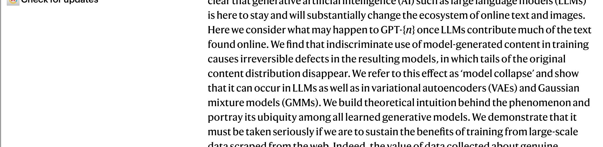
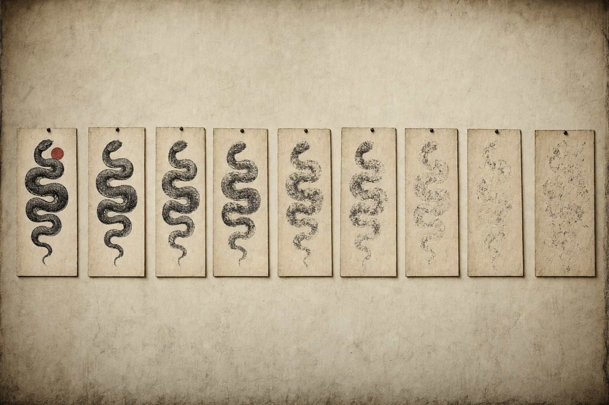
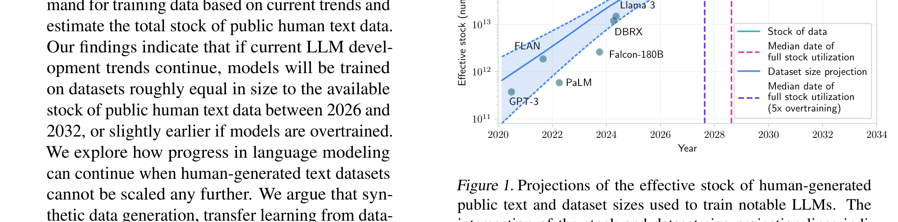

Page 08 of 11 — supporting argument IV
The Snake Reaches Its Own Tail
Set aside every copyright argument on this site for a second and focus on the machines. The loop still fails. In Nature, Shumailov and his team documented what happens when models train on the outputs of earlier models:
Exhibit 08-A · Shumailov et al., Nature, p. 755“We find that indiscriminate use of model-generated content in training causes irreversible defects in the resulting models, in which tails of the original content distribution disappear.”

They named the disease “model collapse.” Generated data pollutes the next generation’s training set, the rare and specific information vanishing first, and eventually the model “converges to a distribution that carries little resemblance to the original one” (755). And it’s not one architecture’s bug. It shows up in language models, VAEs, and Gaussian mixture models. Anything that learns from its own reflection degrades.

The paper is careful about its limits. The headline result is about “indiscriminate” use of generated data (755), and the authors admit keeping 10% of original human data every generation still left “only minor degradation of performance” (758). The authors also flag what this makes valuable:
Exhibit 08-B · Shumailov et al., p. 755“[T]he value of data collected about genuine human interactions with systems will be increasingly valuable in the presence of LLM-generated content in data crawled from the Internet.”
At ICML 2024, Villalobos and the Epoch AI team projected when the industry collides with the supply of human words:
Exhibit 08-C · Villalobos et al., ICML 2024“[I]f current LLM development trends continue, models will be trained on datasets roughly equal in size to the available stock of public human text data between 2026 and 2032.”

Their median exhaustion year is 2028. Two years from the day this site went up. Now hold that against the previous page. The market is paying humans less and less for the exact work these scientists are calling “increasingly valuable” and finite. Human work feeds the model, the model floods the internet, and the flood degrades the next model’s food.
Generation0
Sample — a sentence from this page, re-printed each generation Illustration, not data
A sentence from this page is re-rendered at each generation and visually degrades as the counter rises: letters drop out, spacing decays, and the remaining glyphs fade. The sentence reads: “Human work feeds the model, the model floods the internet, the flood degrades the next model’s food.”
Model collapse, while not a serious problem yet, will only grow as a check on the power of AI companies.